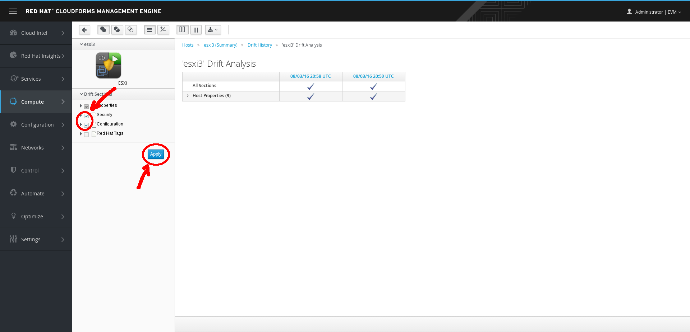
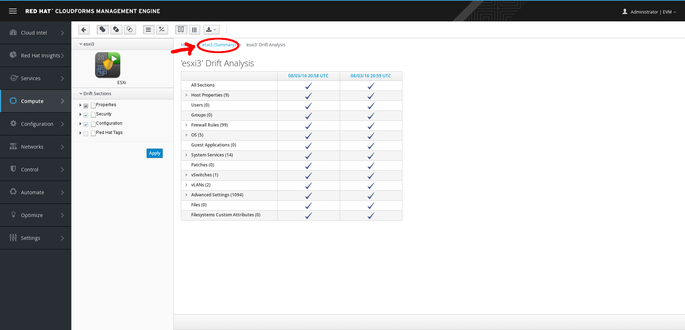

Exercise 1.2 - Discovering Virtualization Host Systems
Exercise Description
In this exercise, you will learn how to view, search and manage host systems.
In Red Hat CloudForms, hosts are hypervisors running on physical hardware providing virtual machines and infrastructure.
The CloudForms Management Engine automatically adds hosts from discovered providers. However, you can also discover hosts directly if not using a provider. Discovering hosts is only supported for standalone VMware vSphere servers.
Section 1: Explore Infrastructure Hosts
Step 1: Select Compute → Infrastructure → Hosts.

List Infrastructure Hosts
Step 2: View the list of your private datacenter infrastructure hosts, such as VMware vSphere and Red Hat Enterprise Virtualization managed hosts (Red Hat Enterprise Linux or Red Hat Enterprise Virtualization Hypervisor).
You can discover hosts independently, from an infrastructure provider, but this is not recommended because you do not see the relationship between hosts and providers.
Section 2: Discover Infrastructure Hosts
In very large environments, you can discover new hosts directly.
Step 1: Click (Configuration), then click (Discover items).
Discover Infrastructure Hosts
Step 2: Review the data entry screen, but do not enter any information.
Step 3: Click Cancel to return to the previous screen.

Cancel Infrastructure Host Discovery
Section 3: Add Infrastructure Hosts
You can also manually add infrastructure hosts, if they are known.
Step 1: Click (Configuration), then click (Add).

Add Infrastructure Hosts
Step 2: Review the data entry screen, but do not enter any information.
Step 3: Click Cancel to return to the previous screen.
Cancel Add Infrastructure Hosts
Section 4: Explore the Virtual Thumbnail for Infrastructure Hosts
The web interface uses virtual thumbnails to represent providers. Each thumbnail contains four quadrants by default, which display basic information about each provider.

Example Virtual Thumbnail
- The top left quadrant shows the number of VMs running on the host.
- The top right quadrant shows the power state of the host.
- The image in the bottom left quadrant represents the type of host, such as VMware vSphere and Red Hat Enterprise Virtualization.
- The bottom right quadrant shows the status of the host.
- A (Policy) in the center indicates that this host has one or more policies applied.
Step 1: To download the list of hosts, click (Download) next to (Power).

Download Host Providers
Step 2: In the top right corner of the window, click to toggle between Grid, Tile, and List views.

Top Window Host Providers Navigation
Step 3: Select the infrastructure host named esxi3 with VMware and 20 VMs, and observe the following details on the resulting screen:

vSphere Hosts Dashboard
- The Properties section displays detailed information about the host.
- Observe these parts of the Properties details to see how this host relates to its resources in the provider.
- The Compliance section shows whether the host is compliant with its applied policies.
- The Smart Management section shows that this provider is tagged as existing at a specific location, as well as its provisioning scope.
- The Authentication status section shows whether or not CloudForms can log in to the host.
- The Security section lists users, groups, patches, firewall rules, and other operating system security-related information.
- The Configuration section lists packages, services, and other operating system configuration-related information.
Section 5: Explore Host Drift History
Step 1: In the Relationships section, click Drift History.
vSphere Host Drift Tab Dashboard
The Relationships section is an accordion tab nested within the host named esxi3.
Step 2: On the resulting screen, check at least two of the available dates.
Step 3: Click  (Drift) above the list of timestamps.
(Drift) above the list of timestamps.
vSphere Host Drift Dashboard Detail
Step 4: On the next screen, do not uncheck Properties, but check Security and Configuration.
Step 5: Click Apply.

vSphere Host Drift Dashboard Section Detail
If the host changes between the various points in time, it appears here. Can you see what’s changed over time?
Step 6: Try using the (Filters Buttons) to see which changes have occurred.
vSphere Host Drift Dashboard Filter Detail
You will likely need to click the little mark next to the Host Properties section to expand and see the details of what’s changed.
Section 6: Explore Infrastructure Host Utilization
Step 1: Click esxi3 (Summary) to select the host named esxi3 from the Drift Analysis page.

CloudForms vSphere Dashboard
Step 2: Click (Monitoring) and then select  (Utilization).
(Utilization).
Hosts Monitor Utilization
Step 3: Try changing the Interval to Hourly.

Hosts Monitor Utilization Interval
Step 4: Examine the screen that appears, showing a detailed report of CPU, memory, disk I/O, network, and running VMs.
- To see a specific data point, hover over any chart.
- To zoom in on a chart, click (Zoom In).
- To modify the timeframe displayed in the report, select the date range at the top of the screen.
The data in this demo is static, please do not go beyond August 7, 2013.
Section 7: Explore Infrastructure Host Power State Control
Step 1: Return to the list of Compute Hosts (eg, click the Hosts link in the navigation breadcrumbs at the top of the page).

Infrastructure Hosts Breadcrumb
Step 2: Check the box next to any host, but do not select the host.
Note that the (Power), located above the list of hosts, is now active due to host selection.
Also, observe the available power states that you can set for this host.

Infrastructure Hosts Power States
This demo environment is not connected to any real hosts, so changing the power state here does not affect any hosts.